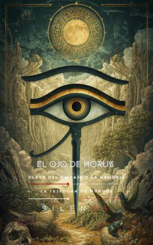

Illuminati
EL OJO DE HORUS: Clave del Paisaje y la Memoria
Sinopsis
¿Qué ocurre cuando un símbolo milenario se convierte en la lente a través de la cual entendemos el poder, la justicia y la propia realidad? El Ojo de Horus: Clave del Paisaje y la Memoria es un viaje fascinante que recorre la historia de la humanidad desde los mitos del Antiguo Egipto hasta las estructuras de vigilancia y diseño del mundo contemporáneo. A través de sus páginas, los autores Cristina Lobo y Manuel Rodsua desentrañan cómo la figura del Wadjet —el Ojo restaurado— ha dejado de ser un simple amuleto para transformarse en una gramática del orden político y social. Lo que descubrirás en este libro: El Origen del Orden: Explora el mito de Osiris y Set, el desmembramiento y la épica búsqueda de Isis para restaurar la ley a través del ritual y la memoria. La Anatomía del Símbolo: Un análisis profundo sobre cómo el diseño del Ojo de Horus dialoga con el encéfalo humano y los sentidos, desde la visión central hasta el "tacto de la tierra". La Transmisión del Secreto: Un recorrido por las sociedades y movimientos que han custodiado esta mirada: desde los misterios de Eleusis y el Libro de Abramelin hasta la influencia de los Illuminati y la Golden Dawn. Geometrías del Poder: Descubre la huella del símbolo en la arquitectura moderna, desde el trazado de Washington D.C. hasta el misterioso Ojo de Silkeborg. ¿Por qué leer esta obra? Este no es solo un libro de historia o mitología; es una herramienta de lectura atenta para el paisaje actual. En una era de satélites, redes globales y transparencia cuestionada, El Ojo de Horus nos invita a reflexionar sobre la responsabilidad de las instituciones y la forma en que el diseño de nuestro entorno proyecta simbolismos ocultos a plena vista. Con una narrativa que mezcla el rigor documental con una prosa evocadora, los autores nos guían por un taller de ritos, archivos inquietantes y mapas de proporción áurea para responder a una pregunta fundamental: ¿Quién nos mira y cómo elegimos mirar nosotros? Ideal para: Entusiastas de la egiptología, estudiosos de la simbología, apasionados por la historia de las sociedades secretas y cualquier lector interesado en la intersección entre el mito y la política moderna.